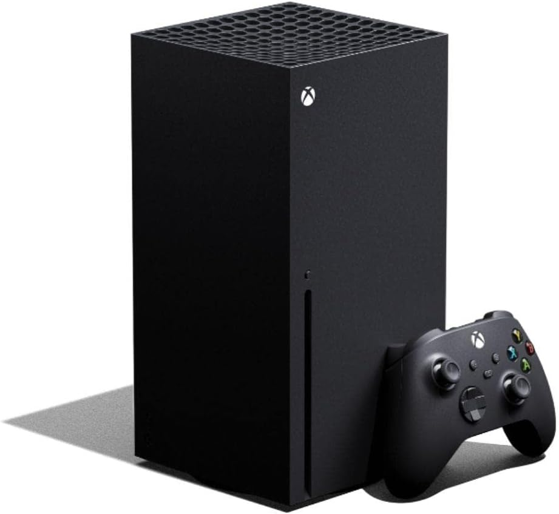

Console Xbox Series X - 1TB
Marca: Microsoft
R$ 4.349,00
ou em até 10x de R$ 434,90 sem juros
- O Xbox mais rápido e poderoso de todos: Explore novos mundos com 12 teraflops de poder de processamento gráfico, DirectX ray tracing, um SSD personalizado e jogos em 4K.
- Milhares de jogos de quatro gerações: Jogue milhares de títulos do Xbox One, Xbox 360 e Xbox Original com retrocompatibilidade, incluindo títulos otimizados no lançamento.
- SSD Personalizado: Maximize cada minuto de jogo com o Quick Resume, tempos de carregamento ultrarrápidos e jogabilidade de até 120 FPS.
Em estoque.
Vendido e entregue por Nexus Games
Descrição do produto
Apresentamos o Xbox Series X, o nosso console mais rápido e poderoso de todos os tempos, projetado para uma geração de consoles que tem você no centro. A engenharia de sistema em um chip (SOC) e a Xbox Velocity Architecture colocam a velocidade na ponta dos seus dedos, e o SSD personalizado de 1TB e a CPU trabalham em conjunto para reduzir drasticamente os tempos de carregamento. Alterne entre os jogos de forma fluida e instantânea com o Quick Resume.
Informações técnicas
| Marca | Microsoft |
| Modelo | Xbox Series X |
| CPU | 8X Cores @ 3.8 GHz (3.66 GHz w/SMT) Custom Zen 2 CPU |
| Armazenamento | SSD NVME personalizado de 1TB |
| Conteúdo da Embalagem | Console, 1 Controle Sem Fio Xbox, Cabo HDMI de alta velocidade, Cabo de energia |